-
会期
2023.08.03 (木)／08.09 (水) 再配信：10.27 (金)
アーカイブ配信：11.15(水)～12.15(金) - 会場 オンライン／リアル（一部）
※事前収録に伴うスタジオ観覧は抽選でご招待
巨大LEDパネルに映し出される広大な仮想空間。リアルの人間が空間に入り込み、自然なバーチャル映像を作り出すーー。
映像化手法「バーチャルプロダクション・インカメラVFX」が普及期に入った。
映画、テレビ、CMなどの映像制作でのVPスタジオ利用が広がりつつあるなか、さらに新しく、ボリュメトリック技術を使ったデジタル映像制作技術も本格化。
デジタルアセットを軸に一般企業でも利活用を探る動きも活発になってきている。
VPやボリュメトリックなどの新しい制作環境が整ってきた2023年。
今後、爆発的な増加が見込まれる「仮想空間の映像活用」を探るオンラインカンファレンスを8月に開催。
information お知らせ
-
2023/11/15アーカイブ配信を開始しました。
-
2023/10/06全プログラムの再配信を決定しました。
-
2023/08/03オンラインカンファレンスを開始しました。
-
2023/07/11プログラムの一部を公開し、事前登録の受付を開始しました。
-
2023/06/02バーチャルプロダクションDays + 2023のWebサイトを公開しました。
outline 開催概要
| 会期 | 2023年8月3日（木）／8月9日（水）の2日間 再配信：10月27日（金） アーカイブ配信：11月15日(水)～12月15日(金) |
|---|---|
| 会場 | オンライン開催／リアル開催（一部限定） ※事前収録に伴うスタジオ観覧は抽選でご招待 |
| 主催 | 日経BP |
| 後援 | 映像産業振興機構（VIPO） |
| 参加方法 | 事前申込（参加料は無料） |
project 企画一覧
オンライン
カンファレンス
Online Conference
2023年8月3日（木）と8月9日（水）の2日間、昼間の第1部と夕方の第2部に分けてセッションを配信します。日時によって配信番組の内容が変わりますので、事前登録時にプログラムを確認してお申し込みください。全ての配信は、事前登録すれば無料で視聴できます。
10月27日（金）の再配信も、事前登録すれば無料で視聴できます。
事前収録の
セッション観覧に
抽選でご招待
Invitation
LEDステージを使ったバーチャルプロダクションスタジオにて事前収録するセッションへ、抽選で観覧をご招待します。インカメラVFXの現場を見るだけではなく、その舞台裏から関係者との会話など、バーチャルプロダクションのすべてを堪能できます。観覧希望する方は、下記のお申し込みページをご覧ください。
スタジオ観覧申込program プログラム一覧
オープニングトーク1
バーチャルプロダクション、その限りない可能性とは？
VPD＋23 Day01の見どころを解説します！
- 講演内容
-
バーチャルプロダクションDays + 2023のオープニングを飾るトークセッション。特撮映像（VFX）業界で長く情報を収集されている大口孝之客員教授が、その歴史を振り返りながら、技術の進展と広がる活用方法について解説します。また、Day01の見どころもお伝えします！
-
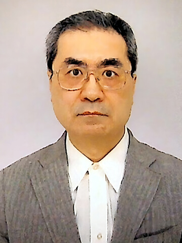
デジタルハリウッド大学
客員教授大口 孝之 氏
日本初のCGプロダクションJCGLのディレクター。EXPO'90のIMAXドーム3D映像のヘッドデザイナー等を経てフリー映像クリエーター。VFX、CG、3D映画、展示映像、アートアニメ等の映像ジャーナリスト。デジタルハリウッド大客員教授、東京藝大大学院、女子美術大、日本電子専門学校で非常勤講師
-
MC
竜瀬 葵
フリーアナウンサー。企業展示会のプレゼンテーション、省庁の発表会、セミナー・表彰式の司会、子ども向けイベント、スポーツフェスタなど、業界のジャンルを問わず様々なイベントで司会やナレーションを担当する。
主催者講演1 すそ野広がるバーチャルプロダクションの利活用 ～あなたの会社でもインカメラVFXを使える時代に～
- 講演内容
-
映画やテレビなどの映像業界向けとして発展続くバーチャルプロダクション（インカメラVFX）だが、実は一般企業での利活用も急拡大している。そこで、さまざまな業界の関わり方を検証しながら、新境地の扉を開いてみる。
-

AR三兄弟
川田 十夢 氏
10年間のメーカー勤務で特許開発に従事したあと、2009年から開発ユニットAR三兄弟の長男として活動。芸能から芸術、プラネタリウムから美術館、六本木ヒルズから日本橋に至るまであらゆる領域を拡張している。J-WAVE『INNOVATION WORLD』が放送中、開発密着ドキュメンタリー『AR三兄弟の素晴らしきこの世界』がBSフジでたまに放送。WIREDで巻末連載、書籍に『拡張現実的』『AR三兄弟の企画書』。2023年はテクノ短編漫画『銭湯ミッドジャーニー』、蓮沼執太＋鎮座DOPENESS＋小林幸子とのコラボ作品『文明単位のラブソング』、Aile The Shota『No Frontier』MVを発表。
-
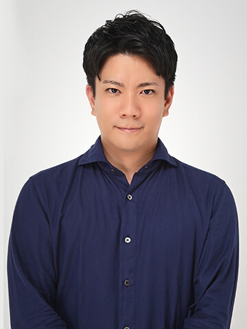
東急不動産株式会社
渋谷開発本部 コンテンツ・エリア共創グループ
課長補佐伴 将晃 氏
2012年、財閥系不動産デベロッパーに新卒入社。営業・事業企画を経験し現職に至る。現職では、商業施設開発や不動産開発用の土地・稼働不動産の売買、大型開発案件の企画立案に従事。現在は、広域渋谷圏の戦略を立案し、不動産領域だけに囚われない新規事業開発を担当。
-
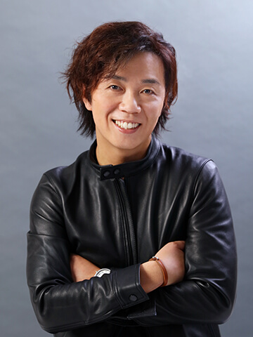
株式会社グローバルプロデュース
代表取締役社長 チーフイベントプロデューサー光畑 真樹 氏
JTBグループ出身。
企業の大規模カンファレンス等をプロデュース。
2012年GLOBAL PRODUCE創業。
2020年よりOnline/Hybrid Event 『Live Convention』を推進。
株式会社グローバルメタバース 代表取締役社長。
GMOグローバルスタジオ株式会社 取締役副社長。 -
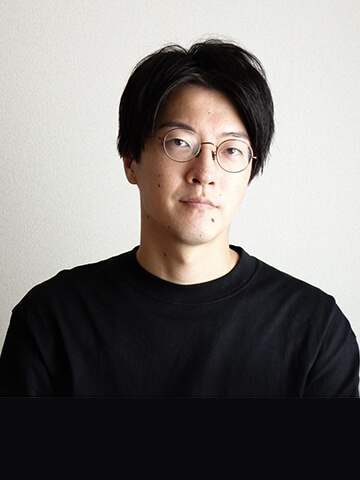
ソニーPCL株式会社
バーチャルプロダクション課
統括マネージャー遠藤 和真 氏
テレビ番組制作会社を経て、2014年にソニーPCL株式会社に入社。国内外の展示会、株主総会、商品プロモーション、音楽ライブなどのイベントや映像制作に携わる。大型LEDディスプレイや高画質3DVRなどの先端映像技術を活用した経験を活かし、2021年よりバーチャルプロダクションプロデューサーとしてプランニングや制作技術のコーディネートを担当する。
MC：日経BP 吾妻 拓
スポンサーシップ・セッション1-1
拡張しつづけるバーチャルプロダクションの可能性―
『清澄白河BASE』 で考えたこと、見えてきたこと。
- 講演内容
-
ソニーPCLのコンテンツクリエイション拠点『清澄白河BASE』 をオープンして約1年半。常設のバーチャルプロダクションスタジオをはじめとする先端テクノロジーを活用したさまざまな事例やプロジェクトが生まれた。これまでの取り組みや、今後の映像表現について考えていることを、クリエイターと共に語る。
-
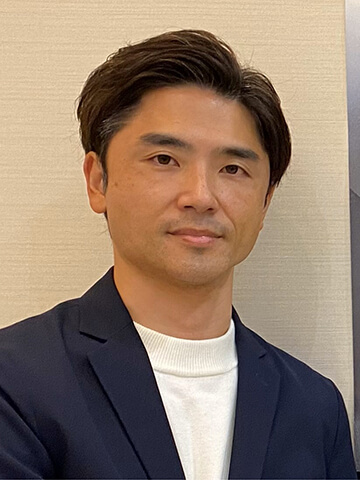
東映テレビ企画制作部プロデューサー
『王様戦隊キングオージャー』チーフプロデューサー大森 敬仁 氏
プロデューサー。カリフォルニア州立大学ロングビーチ校で映画制作を専攻。2003年に東映へ入社。主に仮面ライダーシリーズとスーパー戦隊シリーズに携わる。2013年の『獣電戦隊キョウリュウジャー』以来、『仮面ライダードライブ』『仮面ライダーエグゼイド』『仮面ライダービルド』 『仮面ライダーゼロワン』で、チーフプロデューサーを務で10年ぶりめ、『王様戦隊キングオージャー』にチーフを務める。
-
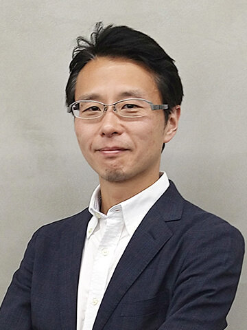
ソニーPCL株式会社
新規ソリューション開発戦略室
室長小林 大輔 氏
1999年、初のソフトウェア開発担当のエンジニアとしてソニーPCLに入社。同社のR&D専任チームの立ち上げと機能確立ならびに組織拡大を牽引。独自開発システムが多数ある。2020年、ゲームエンジンを活用した新たなる映像表現の可能性に挑戦。2021年からビジュアルソリューションビジネス部の統括部長として、ソニーPCLのバーチャルプロダクションをはじめとする先端映像表現の実用化を推進。2023年からは、同社の新規開発事業を推進する新規ソリューション開発戦略室室長を務める。
-
ソニーPCL株式会社
バーチャルプロダクション課
統括マネージャー遠藤 和真 氏
テレビ番組制作会社を経て、2014年にソニーPCL株式会社に入社。国内外の展示会、株主総会、商品プロモーション、音楽ライブなどのイベントや映像制作に携わる。大型LEDディスプレイや高画質3DVRなどの先端映像技術を活用した経験を活かし、2021年よりバーチャルプロダクションプロデューサーとしてプランニングや制作技術のコーディネートを担当する。
ファシリテーター：日経BP 品田 英雄
スポンサーシップ・セッション5 広告映像制作 × カーボンカリキュレーター -環境負荷低減に貢献する新たな取組み-
- 講演内容
-
広告映像制作における温室効果ガス排出量を緻密に算出するシステム「Carbon Calculator for Movie Production」を開発。環境に配慮した撮影手法「バーチャルプロダクション」と組み合わせ、企業の広告宣伝活動における環境アクションとしての活用方法を事例を交えて紹介する。
-
株式会社東北新社
（メタバース プロダクション）
P2 Boost 野中T プロジェクトプロデューサー金子 涼平 氏
2019年より映像プロデューサー。2021年からはプロジェクトプロデューサーと名乗り、『プロダクションビジネスにおける＋αをソリューション/ビジネスの観点から開発』をテーマに据えて、さまざまなプロジェクトに関わる。
メタバース プロダクションでは、東北新社におけるプロジェクトリーダーを務める。 -
株式会社電通クリエーティブX（メタバースプロダクション）
ビジネスイノベーションデパートメント
メタバースプロダクション部 フェロー長谷川 徹 氏
CMプロデューサーを経て2009年より電通クリエーティブXに在籍。日本アド・コンテンツ制作協会の技術委員長、制作委員長を歴任。デジタル化や働き方改革に対応した業界標準ハンドブックの作成や「CMオンライン搬入」「withコロナ制作」のルール化を主導。2021年より「メタバースプロダクション」に参画。
-
株式会社電通クリエーティブX（メタバースプロダクション）
メタバースプロダクション部ビジネスイノベーションデパートメント
PX課（プロダクショントランスフォーメーション課） 課長尾形 麻子 氏
電通テックにてプロダクションマネージャー職を経験後、電通クリエーティブXにて管理部門の諸業務を歴任。現在はPX課長としてカーボンカリキュレーターを用いて映像制作業務におけるGHG排出量を計測するプロジェクトに参画し、専門スタッフの育成に携わっている。
スポンサーシップ・セッション4 SMODE：リアルタイムレンダリングからXRまで、多様なクリエイティブに対応するプラットフォーム
- 講演内容
-
このセッションでは、SMODEがクリエイティブな制作をどのように支援するのかを解説する。SMODEは、基本的なデザインからリアルタイムレンダリング、さらにはXR制作まで、多岐にわたる用途に対応する一種の道具箱のような存在。その多機能性と柔軟性を紹介する。
-
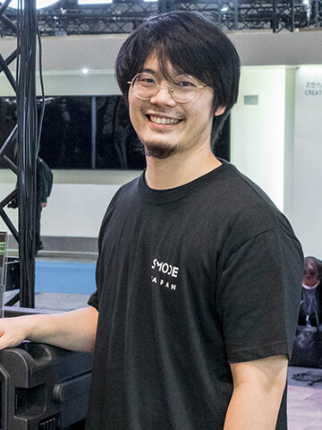
株式会社Smode Japan
取締役 / Director
Head of Training and Support月原 康智 氏
1989年生まれ。長野県を中心に映像業界を経験。広告、番組、舞台映像、VJなどを行う。
2022年に代表のJamie Goodenoughと共にSMODE JAPANを立ち上げ。日本国内におけるSMODEのサポートとトレーニングを行う。
スポンサーシップ・セッション4 クリエイティビティの拡張と高効率を両立する disguise のプラットフォーム
- 講演内容
-
CVFXやxRなど、様々なスタイルのバーチャルプロダクションで代表的なソリューションとなったdisguise。今なお進化を加速、マーカーレスのリアルタイム・モーションキャプチャや、プレビズや素材決定のワークフローをサポートするクラウドサービスなども包括したプラットフォームに。その全容を解説する。
-
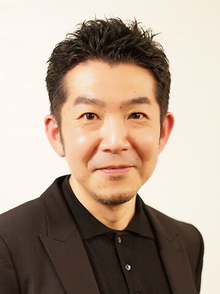
disguise Japan 合同会社
社長三寺 剛史 氏
2021年4月disguise Japan 発足とともに社長に就任。多くのバーチャルプロダクション、ライブイベントの現場に頻繁に出向き、豊富な知識と経験を持つ。前職は映像機器の海外営業担当として世界中のディストリビューターやディーラーの信頼を得ている。
スポンサーシップ・セッション2-1 エンターテイメント業界におけるGenerative AI
- 講演内容
-
Generative AIがコンテンツ制作をはじめエンターテイメント業界で注目されている。株式会社Preferred Networksにてエンターテイメント事業を統括する福田昌昭氏をお招きし、これからどのように活用が進むのか、直近の事例紹介とともに可能性について話し合う。
-
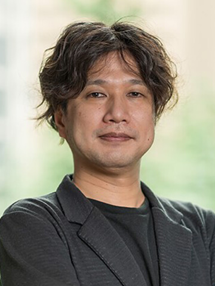
株式会社Preferred Networks
コンシューマープロダクト担当VP福田 昌昭 氏
大学院卒業後、ソニー株式会社でゲーム機、ネットワークサービスの開発を担当。その後、グリー株式会社でソーシャルゲームの企画、開発、運用に従事。事業責任者として事業戦略、事業計画の立案と実行を担当。
現在、株式会社Preferred Networksにてエンターテインメント事業、教育事業、新規事業を統括。コンシューマープロダクト担当VP。 -
デロイト トーマツ コンサルティング合同会社
執行役員・パートナー アジア太平洋地区 先端技術領域パートナー森 正弥 氏
外資系コンサルティング会社、インターネット企業 執行役員を経て現職。先端技術を活用した新規事業創出、大規模組織マネジメントに従事。世界各国の研究開発を指揮していた経験からDX立案・遂行、AIのビジネス活用に強みを持つ。東京大学 IPC顧問。東北大学 特任教授。日本ディープラーニング協会 顧問
-
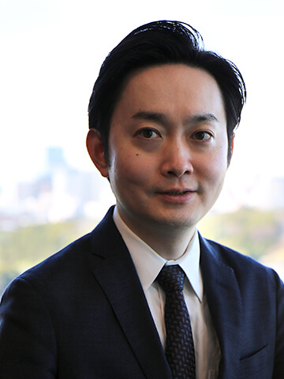
デロイト トーマツ コンサルティング合同会社
Telecom, Media & Entertainment | Director今市 拓郎 氏
メディア・エンターテイメント業界を中心に、事業企画、GTM（Go-to-Market）、組織・人材マネジメント、オペレーション改革などの構想策定から実行支援の経験を豊富に有する。近年はメタバース、Web3領域や先進テクノロジーを用いたエンタメ事業企画を数多く手掛けている。
主催者講演2 使ってみて分かった！インカメラVFXの効能と課題 ～エンタテインメント業界のバーチャルプロダクション1年史～
- 講演内容
-
映画やテレビなどの映像業界向けとして発展続くバーチャルプロダクション（インカメラVFX）だが、実は一般企業での利活用も急拡大している。そこで、さまざまな業界の関わり方を検証しながら、新境地の扉を開いてみる。
-
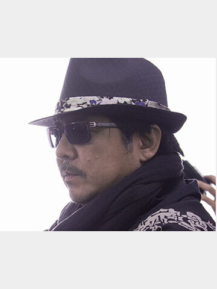
有限会社クラウド
代表取締役雨宮 慶太 氏
映画監督、イラストレーター、キャラクターデザイナー。TVドラマ『鉄甲機ミカヅキ』、映画『ゼイラム』をはじめ、数多くの特撮作品で原作や監督を務める。TVアニメ『魔法少女隊アルス』では原作とキャラクターデザインを担当。2005年に放送開始した『牙狼＜GARO＞』シリーズでは原作・脚本・監督を手がける。
-
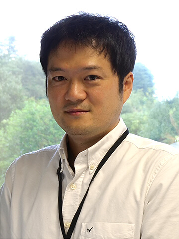
NHK
メディア技術局 コンテンツテクノロジーセンター エキスパート井藤 良幸 氏
2001年NHK入局。
2005年より、NHKスペシャル、大河ドラマ、選挙放送など、数々の番組のCG制作を担当。
どうする家康インカメラVFXチームにおいはシニアテクニカルディレクターとしてチームを牽引している。 -
TBSアクト
デザイン本部 CGセンター 未来技術推進部青木 貴則 氏
リアルタイムCGを中心に、AIやセンサーなどの各種デバイスを応用したアプリ開発とシステム構築を担当。電機メーカー（開発）から、映像制作会社（CG・VFX、SE）、フリーランス（CG・VFX、専門学校講師）を経て、2006年、TBSグループに入社。2021年からTBSアクトに在籍。
-
ソニーPCL株式会社
バーチャルプロダクション課 統括マネージャー遠藤 和真 氏
テレビ番組制作会社を経て、2014年にソニーPCL株式会社に入社。国内外の展示会、株主総会、商品プロモーション、音楽ライブなどのイベントや映像制作に携わる。大型LEDディスプレイや高画質3DVRなどの先端映像技術を活用した経験を活かし、2021年よりバーチャルプロダクションプロデューサーとしてプランニングや制作技術のコーディネートを担当する。
MC：日経BP 吾妻 拓
オープニングトーク2
ボリュメトリック技術の歴史を振り返る
VPD＋23 Day02の見どころを解説します！
- 講演内容
-
バーチャルプロダクションDays + 2023のオープニングを飾るトークセッション。特撮映像（VFX）業界で長く情報を収集されている大口孝之客員教授が、ボリュメトリック技術の歴史を振り返りながら、技術の進展と広がる活用方法について解説します。また、Day02の見どころもお伝えします！
-
デジタルハリウッド大学
客員教授大口 孝之 氏
日本初のCGプロダクションJCGLのディレクター。EXPO'90のIMAXドーム3D映像のヘッドデザイナー等を経てフリー映像クリエーター。VFX、CG、3D映画、展示映像、アートアニメ等の映像ジャーナリスト。デジタルハリウッド大客員教授、東京藝大大学院、女子美術大、日本電子専門学校で非常勤講師
-
MC
竜瀬 葵
フリーアナウンサー。企業展示会のプレゼンテーション、省庁の発表会、セミナー・表彰式の司会、子ども向けイベント、スポーツフェスタなど、業界のジャンルを問わず様々なイベントで司会やナレーションを担当する。
主催者講演3 海外事例・Pixomondoの全貌と最新北米トレンド（同時通訳）
- 講演内容
-
カナダ・トロントやバンクーバーに巨大なLEDステージを持つ、北米有数のVFXスタジオPixomondo（ピクソモンド）。同社Chief Innovation OfficerのMahmoud Rahnama氏が同社の最新事例を紹介しつつ、北米のバーチャルプロダクション市場の動向について、Rock Paper RealityのJiten Dajee氏と解説する。
-
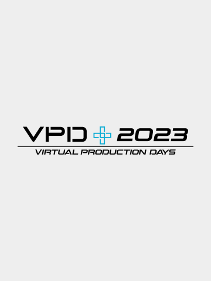
Pixomondo
Chief Innovation OfficerMahmoud Rahnama 氏
-
Rock Paper Reality, LLC
Director, Expert in Virtual ProductionJiten Dajee 氏
特にリアルタイム3D技術領域を専門とするメディア・エンターテインメント業界のエキスパート。Fortune 100企業向けのM&A・全社戦略・技術戦略アドバイザリー経験に富む。バーチャルプロダクションに関するコンサルティングをいち早く手掛け、大手OTTやVFXスタジオ向けにグローバルで支援している。
スポンサーシップ・セッション2-2 3Dコンテンツ業界におけるバーチャルコラボレーションの可能性
- 講演内容
-
バーチャルプロダクション、VFXやゲームなど、3DCGを活用したコンテンツへの注目度と需要が年々増している中、効果的なコンテンツ供給のため、制作の在り方にも変化が起きつつある。
従来のウォーターフォール型から、コンカレント/アジャイル型のコンテンツ制作にシフトしていくにあたり、バーチャルコラボレーションがもたらす可能性についてクロストークする。
-
エヌビディア合同会社
シニア ビジネスデベロップメント マネージャー
（RTX/Omniverse）中嶋 雅浩 氏
3DCGアプリケーションやリアルタイムエンジンの製品を中心に、エンジニア、セールス、またコンサルタントとして長年にわたり販売に関与。近年は産業分野における、ビジュアライゼーション技術の発展にフォーカス。2023年よりNVIDIAにてRTX/Omniverseの事業開発に従事。趣味は登山、鉄道旅行等
-
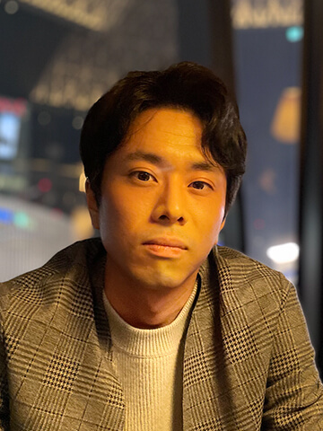
デロイト トーマツ コンサルティング合同会社
Telecom, Media & Entertainment | Manager辻田 慶太郎 氏
メディア・エンタテインメント業界を対象に中計策定、事業戦略、新規事業企画、技術アセスメントなどの支援に従事。バーチャルプロダクションを筆頭に、主に映像制作やアニメーション・ VFX 、ゲーム開発などを中心としたコンテンツ制作における技術・ビジネス領域のプロジェクトを多数経験。
スポンサーシップ・セッション5 広告映像制作 × カーボンカリキュレーター -環境負荷低減に貢献する新たな取組み-
- 講演内容
-
広告映像制作における温室効果ガス排出量を緻密に算出するシステム「Carbon Calculator for Movie Production」を開発。環境に配慮した撮影手法「バーチャルプロダクション」と組み合わせ、企業の広告宣伝活動における環境アクションとしての活用方法を事例を交えて紹介する。
-
株式会社東北新社
（メタバース プロダクション）
P2 Boost 野中T プロジェクトプロデューサー金子 涼平 氏
2019年より映像プロデューサー。2021年からはプロジェクトプロデューサーと名乗り、『プロダクションビジネスにおける＋αをソリューション/ビジネスの観点から開発』をテーマに据えて、さまざまなプロジェクトに関わる。
メタバース プロダクションでは、東北新社におけるプロジェクトリーダーを務める。 -
株式会社電通クリエーティブX（メタバースプロダクション）
ビジネスイノベーションデパートメント
メタバースプロダクション部 フェロー長谷川 徹 氏
CMプロデューサーを経て2009年より電通クリエーティブXに在籍。日本アド・コンテンツ制作協会の技術委員長、制作委員長を歴任。デジタル化や働き方改革に対応した業界標準ハンドブックの作成や「CMオンライン搬入」「withコロナ制作」のルール化を主導。2021年より「メタバースプロダクション」に参画。
-
株式会社電通クリエーティブX（メタバースプロダクション）
メタバースプロダクション部ビジネスイノベーションデパートメント
PX課（プロダクショントランスフォーメーション課） 課長尾形 麻子 氏
電通テックにてプロダクションマネージャー職を経験後、電通クリエーティブXにて管理部門の諸業務を歴任。現在はPX課長としてカーボンカリキュレーターを用いて映像制作業務におけるGHG排出量を計測するプロジェクトに参画し、専門スタッフの育成に携わっている。
スポンサーシップ・セッション4 SMODE：リアルタイムレンダリングからXRまで、多様なクリエイティブに対応するプラットフォーム
- 講演内容
-
このセッションでは、SMODEがクリエイティブな制作をどのように支援するのかを解説する。SMODEは、基本的なデザインからリアルタイムレンダリング、さらにはXR制作まで、多岐にわたる用途に対応する一種の道具箱のような存在。その多機能性と柔軟性を紹介する。
-
株式会社Smode Japan
取締役 / Director
Head of Training and Support月原 康智 氏
1989年生まれ。長野県を中心に映像業界を経験。広告、番組、舞台映像、VJなどを行う。
2022年に代表のJamie Goodenoughと共にSMODE JAPANを立ち上げ。日本国内におけるSMODEのサポートとトレーニングを行う。
スポンサーシップ・セッション4 クリエイティビティの拡張と高効率を両立する disguise のプラットフォーム
- 講演内容
-
CVFXやxRなど、様々なスタイルのバーチャルプロダクションで代表的なソリューションとなったdisguise。今なお進化を加速、マーカーレスのリアルタイム・モーションキャプチャや、プレビズや素材決定のワークフローをサポートするクラウドサービスなども包括したプラットフォームに。その全容を解説する。
-
disguise Japan 合同会社
社長三寺 剛史 氏
2021年4月disguise Japan 発足とともに社長に就任。多くのバーチャルプロダクション、ライブイベントの現場に頻繁に出向き、豊富な知識と経験を持つ。前職は映像機器の海外営業担当として世界中のディストリビューターやディーラーの信頼を得ている。
スポンサーシップ・セッション1-2 走行距離0kmで、カーチェイスを描くー“drive”での挑戦
- 講演内容
-
バーチャルプロダクションだけで、どこまで映像表現を追求できるのか―。ソニーPCLとTYO driveは共同プロジェクトを立ち上げ、『清澄白河BASE』内のVPスタジオだけで撮りきる“カーチェイス”コンテンツに挑戦した。その撮影時のエピソードを中心に、バーチャルプロダクション撮影の可能性について話す。
-
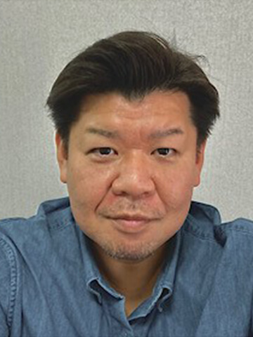
ソニーPCL株式会社
プロデューサー寺井 司 氏
1977年生まれ 東京出身
大手広告代理店を経て、2012年ソニーPCLへ入社。プロモーションやショールームリニューアル案件から開発デザイン領域まで大手自動車メーカーとのビジネスを中心に従事し現在に至る。 -
TYO drive
石川 竜大 氏
1976年生まれ、栃木県出身。
CM制作などを中心に、映画、TV 番組、MV、コンテンツ制作など幅広い映像制作を経験。2013年TYOに入社。
様々な映像制作の経験から、分野に囚われない制作環境をプロデュースできることが自分の持ち味。
新しい案件でもポジティブにチャレンジし、案件に関わる全ての人がHappyになる現場を作ることを心がけています。 -
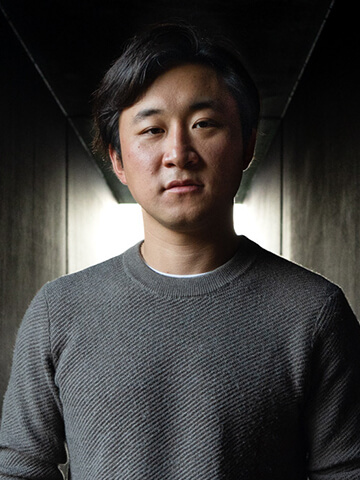
ソニーPCL株式会社
VPプロデューサー大賀 英資 氏
ソニーPCLにてLEDを使用したバーチャルプロダクションプロデューサーまたディレクターとして活動中。
アメリカに11年生活し、ハリウッドの現場で培ったノウハウを基に、日本で最新映像技術の普及に努めている。 -
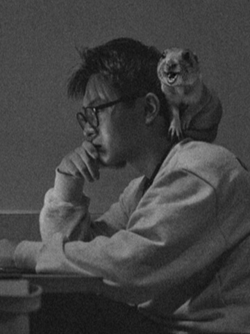
ディレクター
徳平 弘一 氏
1989年 中華人民共和国 青海省 生まれ。
大学時代にアメリカNew Yorkに留学し映像を学ぶ。帰国後、映像ディレクターを養成するTHE DIRECTORS FARMに参加し、2018年に独立。
現在は、英語・中国語・日本語を駆使して、国内外のTV-CM・Webムービーなど演出。
主な作品に、ユニクロ AIRism グローバルムービー、JR SKISKI TV-CM、Google Web-CM、ユニバーサルスタジオジャパン TV-CM、コカ・コーラ TV-CMなど。
主催者講演4 人の動きをそのままに3D空間に伝送！？ ～実写ベースの3D制作手法 ボリュメトリック技術って何？？～
- 講演内容
-
空間全体を丸ごとキャプチャーして、3D CG空間内にデータ転送するボリュメトリック技術。3Dモデルを作ってから、それに動きをつけることで3D CG映像を作る従来の方法とは真逆で、実在する人の動きをそのまま取り込むことができるユニークな手法だ。このボリュメトリック技術を使った撮影スタジオが徐々に増えている。その仕組みと効能について学ぶ。
-
映像プロデューサー
城戸 孝夫 氏
1995年～2007年 株式会社ディ・ストーム 所属 マーケティングマネージャー・取締役
2003年 彩の国ビジュアルプラザSKIPシティ インキュベーターアドバイザー
2007年～2011年 オートデスク株式会社 所属 インダストリーマーケティングマネージャー
2013年 東京工芸大学 芸術学部 アニメーション学科専有所室マイブリッジ・デジタルシアター基本及びシステム設計担当
2015年～19年 東京工芸大学 芸術学部 アニメーション学科 准教授
2019年 ギャガ・アニメーションズ・カンパニー プロジェクト システムディレクター / スタジオマネージャー 日本アニメーション協会 会員所属 日本アニメーション学会 会員所属 -
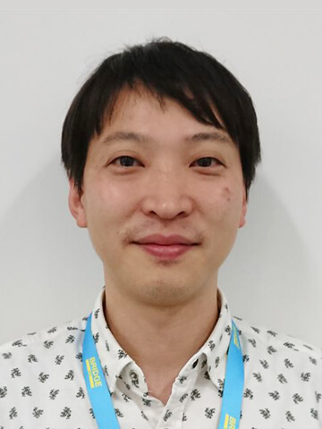
ソニーPCL株式会社
新規ソリューション開発戦略室
vTech課 統括課長池田 康 氏
MC：日経BP 青谷 悠平
- 注意事項
- 本セミナーを受講申込いただいた方には、ご登録いただいた住所や電話番号、E-Mailアドレスなどに、講演企業、協賛企業から直接各種ご案内（製品・サービス、展示会・セミナー催事等）や、調査などのお願いをさせていただく場合があります。日経BPが登録情報を取りまとめ、該当企業に第三者提供いたします。それ以降は、各社それぞの責任において管理されます。ご登録情報の第三者提供にご同意いただけた方のみ、お申し込みください。
news 最新情報
最新ニュース
2023/05/19
松竹、バーチャルプロダクションを用いてtofubeatsのMVを制作
松竹株式会社は、先端技術を用いたコンテンツ及び制作ワークフロー開発の一環として、「代官山メタバーススタジオ」のLEDウォールを活用し、音楽プロデューサー/DJでありつつ、様々なアーティストへ楽曲提供や楽曲のリミックスを行うtofubeatsの新曲『自由』のMVを制作した。
本作では映像素材を使ったシンプルな合成から、Unreal Engine5でリアルタイムにシミュレーションされたCGを使用したテクニカルな合成まで、美術セットを組み合わせながら様々な撮影パターンを検証した。MVの制作は、ドラマ等の制作に比べ、自由な画面構成が可能である点に着目し、結果として実証実験と映像制作を同時に進行できた。
2023/05/10
「清澄白河BASE」のバーチャルプロダクションスタジオ、機能をさらなる進化に向け大幅拡張
ソニーピーシーエル株式会社は、2022年2月に開設したクリエイティブ拠点「清澄白河BASE」（東京都江東区）内のバーチャルプロダクションスタジオの機能をアップグレードする。拡張工事を6月21日から開始し、7月26日にリニューアルオープンする。
同スタジオでは、開設以来バーチャルプロダクションを活用したCM、ドラマ、ミュージックビデオなど、50本を超える作品を手掛けてきた。今回のスタジオ機能のアップグレードは、これらの制作実績と多くのクリエイターとの共創から得た多彩なニーズへの対応を目指したもの。それにより、さらなる映像表現の追求と制作パフォーマンスの向上を実現する。
【バーチャルプロダクションスタジオのアップグレード概要】
■ソニーのCrystal LED Bシリーズを使用した国内最大級となるメインLEDウォールを拡張。
■可搬式LEDを新規導入。
■XRシステムやトラッキングシステムを追加。
■制作パフォーマンスを向上させる新たな取組みを開始。
2023/04/27
“スクランブル交差点”や“道頓堀”での撮影が自由自在、都市の街並みを完全再現した「CAD CENTER library」を公開
映像制作における“温室効果ガス削減”と“プロセス効率化”の実現を目指す共同プロジェクト「メタバース プロダクション」は、3DCG技術をベースに様々なデジタルコンテンツ制作のビジュアライゼーション環境を構築・提供する株式会社キャドセンターと連携した。
バーチャルプロダクションのひとつであるインカメラVFX撮影の利用シーン拡大に向け、“渋谷”と“道頓堀”の街並みや“東京都港区”と“横浜”の都市データの再構築したフォトリアルな3DCG背景素材「CAD CENTER library」第1弾を、4月27日に公式ウェブサイトで公開した。
すべての素材はUnreal Engine 4で開発され、インカメラVFX撮影に対応しており、メタバース プロダクションが提供するPXサービス［Virtual House Studio］として利用可能。
2023/04/24
ヒビノ、大型バーチャルプロダクション撮影に特化したLED「Ruby2.6F」のレンタル開始
ヒビノ株式会社は、大型のバーチャルプロダクション撮影に特化したLEDディスプレイ・システム「Ruby2.6F」のレンタルを開始した。
Ruby2.6Fは、極めて反射の少ないマットな表面と優れた色再現能力で、高品質なバーチャルプロダクションを実現するROE Visual製ハイエンドLEDディスプレイ・システム。当社は、世界に先駆けて導入し、現在放送されている大河ドラマ『どうする家康』（NHK）の撮影より運用を開始した。
従来の大河ドラマでは、オープンセットや野原、森林などを使いロケーション撮影されていたシーンの多くを、『どうする家康』はスタジオで撮影。バーチャルプロダクションを活用することで、従来のオープンセットでは難しかった各国の文化の違いや変化を空や城下町の空気感も含めドラマチックに表現することが可能となった。
2023/04/03
TBSグループ初のイノベーションスペース「Tech Design X」が赤坂にオープン
TBSでは、グループを通じて初となるイノベーションスペース「Tech Design X（読み：テックデザインクロス）」を、東京・赤坂のTHE HEXAGON9階にオープンした。
「Tech Design X」の最大の特徴は、訪れた人のクリエイティビティを刺激する「遊び心ある空間」という点だ。
施設内で最も存在感を放つのは、幅6m・高さ3.4mにもなる巨大なLEDウォール。昨年放送された、『北京オリンピック』や『世界陸上オレゴン』で使用されたXRや、日曜劇場『マイファミリー』のバーチャルプロダクションなど、最先端の撮影手法の調査・研究を技術や美術だけでなく、制作でも気軽に試せる場となっている。新しい表現方法のトライアルやコンテンツのクオリティ向上はもちろんのこと、撮影の効率化など将来的なコストパフォーマンス向上が期待されている。
2023/03/13
disguise のアプリケーション「Designer」が「r24」にアップデート
映像演出プラットフォームと拡張現実（xR）ソリューションのマーケットリーダーである disguise が、基幹ソフトウェア「Designer」の最新バージョン「r24」をリリースした。「Designer」は映像演出やバーチャルスタジオのデザインやシミュレーションができ、disguse のハードウェアと組み合わせることで実際の演出や制作を実現する。
この新リリース「r24」ではオーディオ波形表示やダイナミックレイヤーネーミングをはじめとする多数のアップデートにより、3次元映像演出をよりクリエイティブかつ高い操作性で実現。ライブショーからバーチャルプロダクション、放送、固定設備まで、disguiseの広範な業界アプリケーションのすべての制作においてdisguiseソフトウェアの性能向上を実現する。
◆新機能追加とともに、操作性、安定性も向上
◆さらに強化された操作サポートやカラー対応
◆Insiderグループとの共同開発による改善
2022/03/08
バーチャルプロダクション向けCG背景コンテスト
「BACKDROP 2022」3月15日（火）受賞作品発表！
ソニーグループ株式会社は、バーチャルプロダクションに使える3次元CG背景の制作技術をコンテスト「BACKDROP 2022」の受賞作品を4月に発表する。BACKDROP 2022は2022年初開催のコンテストで、バーチャルプロダクションに投影して使える3次元CG背景の若手クリエイターを発掘するのが目的。学生や個人CGクリエイターなどを対象に、3月31日まで応募を受け付ける。
テーマは「映画やCMなどで使用されるような“ロケ地っぽい”3DCG背景」で、ゲームエンジンのUnreal Engine（4.27）で稼働することが条件。最優秀賞には賞金30万円と副賞が送られ、受賞作品をバーチャルプロダクションスタジオで実際に投影してもらえる権利も与えられる。
審査委員長はソニーグループの御供俊元常務で、モデリングブロスやEpic Gamesなどのメンバーが審査員を務める。応募受付の条件など詳細は、公式サイト（https://www.sonypcl.jp/backdrop2022/）を参照してほしい。
2022/03/08
3月11日（金）開催！disguise Japan主催のオンラインセミナー
「バーチャルプロダクションの実際 powered by disguise」
disguise Japanは、3月11日（金）に無料のオンラインセミナー「バーチャルプロダクションの実際 powered by disguise」を開催する。今年1月26日に開催された同社セミナーの続編となる本セミナーでは、バーチャルプロダクションを運営するスタジオで発生するさまざまな課題にどのように対応するか、がテーマ。
2022年8月1日までライセンスフリーで使用できるdisguiseのソフトウエア「Designer」の最新版の活用方法などを中心に、バーチャルプロダクションスタジオを構築・稼働する際に発生するさまざまな課題に、どのように対応するかという視点でシステム構築を含めて解説する。
開催日時は3月11日（金）16時から17時の1時間。Zoomウェビナーにて実施される。申込はhttps://www.disguise.one/jp/%e3%83%90%e3%83%bc%e3%83%81%e3%83%a3%e3%83%ab%e3%83%97%e3%83%ad%e3%83%80%e3%82%af%e3%82%b7%e3%83%a7%e3%83%b3%e3%81%ae%e5%ae%9f%e9%9a%9b-powered-by-disguise/。
2022/01/24
ソニーPCL、バーチャルプロダクション新スタジオ「清澄白河BASE」を開設
ソニーピーシーエル（ソニーPCL）は、ソニー製LEDパネル（Crystal LED Bシリーズ）を使用した常設のバーチャルプロダクションスタジオ「清澄白河BASE」を新設し、2022年2月1日からオープンする。
CM、映画、ドラマ、ミュージックビデオからオンラインイベントまで幅広いジャンルの映像コンテンツ制作をはじめ、高精細映像のニーズが高い企業のデザイン部門やマーケティング部門などのエンタープライズ領域向けのコンテンツ制作にも取り組むとともに、ソニーグループやソニー、ソニーイノベーションスタジオ（米国）との連携を通じてバーチャルプロダクションによる制作ソリューションの拡充も進める。
清澄白河BASEは、解像度9600×3456 ピクセル（横15.2m×高さ5.4m）のCrystal LED Bシリーズ（LED画素ピッチ1.58ミリ）を曲面状に配置し、天井面にもLEDパネル（縦7m×横7m）を設置。ソニー製のCineAltaカメラ「VENICE」を使用している。
2022/01/06
「メタバース プロダクション」大型LED常設スタジオ2カ所オープン
電通クリエーティブX、東北新社、ヒビノ、電通クリエーティブキューブの4社共同プロジェクト「メタバース プロダクション」は、大型LED常設スタジオ「studio PX ZERO」（FACTORY [旧横浜スーパー・ファクトリー]鶴見スタジオ内に3月31日まで期間限定で開設】および「studio PX HIBINO」（ヒビノ日の出ビル内 インカメラVFXスタジオHibino VFX Studio）の2カ所を1月14日よりオープンする。
メタバース プロダクションとは、インカメラVFXとバーチャルプロダクション技術を用いることで、従来型の映像制作に比べ撮影時の廃資材の最大90％削減、撮影参加人員の最大90％削減を目標とするPX（映像制作トランスフォーメーション）サービス提供を目指すプロジェクト。「sutudio PX」はそうしたサービスの提供実現の基幹をなすスタジオだ。ROE Visual社のLEDパネル（Ruby 1.5F）、disguise社のメディアサーバー「vx4」とレンダリングサーバー「rxII」、stYpe社のカメラトラッキング「RedSpy」などを導入している。
今後、低予算からハイエンドな映像制作まで幅広いニーズに応えるだけでなく、映像制作における温室効果ガス削減や制作プロセスの効率化も目指すメタバース プロダクション。映像制作現場の変革を実現に大きな期待が寄せられている。
2021/12/22
松竹がバーチャルプロダクションの研究開発拠点「松竹メタバーススタジオ」を開設
松竹は、2022年1月、バーチャルプロダクションの手法・技術の研究開発拠点となる施設「代官山メタバーススタジオ」を東京渋谷に開設する。バーチャルプロダクションとは、3D映像を大型LEDに映し、実際にその場所で撮影したかのような映像を生み出す技術で、現在世界各国の映像業界から注目を集めている最新技術だ。
「代官山メタバーススタジオ」では、従来のグリーンバックや大型LEDディスプレイによるバーチャルプロダクションを用いて、リアルタイムに人物とCGの背景を合成して撮影を行う。これにより、これまで製作者を悩ませてきた天候、日照時間、実際の移動時間といった懸案が解消され、制作作業が大幅に短縮されることになる。手間と時間が必要とされるロケ撮影を刷新する技術。それがバーチャルプロダクションである。
「代官山メタバーススタジオ」の研究開発目的の具体例については、松竹は次のように話す。
――本事業を通して、松竹グループが手掛ける映画・演劇事業における3DデータやCGの活用ニーズを探ると共に、個人・法人問わず多様なクリエイターとの共創により、最先端技術とクリエイティブ制作を繋ぎ、新たな表現方法を追求します。――
第一弾プロジェクトとして、2022年1月下旬にバーチャルプロダクションを用いた歌舞伎公演を配信公演する。
2021/12/22
歌舞伎界で初の試み――伝統芸能とバーチャルプロダクションが融合した配信公演が決定
松竹は、2022年1月に『META歌舞伎 Genji Memories』の配信公演を決定した。この公演は、今世界中で注目を集めるバーチャルプロダクションを用いたもので、歌舞伎ではもちろん初の試みとなる。大型LEDに映し出された3DCG背景・VFXと現実世界で撮影した映像をリアルタイムで合成するバーチャルプロダクションで表現する古典芸能の世界はいかなるものになるのか。
古典文学の名作『源氏物語』をモチーフとしたこの公演に挑むのは、歌舞伎俳優の中村壱太郎と中村隼人。女形として活躍する中村壱太郎は藤壺、葵の上、六条御息所、夕顔、玉鬘と5人の女性を演じ分け、さらに総合演出も手掛ける。中村隼人は自身初となる光源氏役を務める。
脚本は『プリンセスチュチュ』『SHIROBAKO』『天地創造デザイン部』などを手掛けたアニメーター横手美智子。さらに『呪術廻戦』『THE GOD OF HIGH SCHOOL』で演出を担当した西澤千恵が演出協力として参加する。
歌舞伎上演ではもちろんのこと、映像制作においても最先端技術となるバーチャルプロダクションを駆使する『META歌舞伎』。伝統ある和の世界と最先端テクノロジーの融合が生み出す、まったく新しいエンターテインメントが期待される。
2021/12/20
eplus STUDIOがXR Live制作を2022年よりスタート
イベント・ライブチケット販売のほか、動画ストリーミングサービスも展開するイープラスが運営する映像配信・収録スタジオ「eplus STUDIO」が、2022年よりXR Liveの制作を開始。そのプレビューショーとしてJam Fuzz KidのXR Liveを2021年12月21（火）20時から「Streaming+」にて無料配信する。
音楽系ライブの動画配信市場は、リアルライブの中止や延期にともなう代替など、コロナ感染症による影響も大きく、新しいライブの形としてアーティスト・運営が様々な工夫を凝らしながら急成長を続けている。そうした中、注目を浴びているのがXR（Extended Reality）Liveだ。
「eplus STUDIO」はリアル会場にないスケールを持つバーチャルステージで、ライブ感を重視したXR Liveを制作する。それぞれのアーティストの世界観をバーチャル世界で表現し、国地域を超えた新たなファンの獲得にも繋げることを目指す。
21年12月のプレビューショーでは、音楽体験に特化したXR Liveなどに定評がある映像制作会社Moment Tokyoとイープラスが共同制作した15分程度のショートライブを配信する。
2021/12/03
環境に配慮した映像制作を目指す
3社共同プロジェクト「メタバース プロダクション」が発足
電通クリエーティブX（本社：東京都港区）は、東北新社（本社：東京都港区）、ヒビノ（本社：東京都港区）との共同プロジェクト「メタバース プロダクション」を発足した。
「メタバース プロダクション」では、バーチャルプロダクションのテクノロジーを用い、映像制作ワークフローにおける温室効果ガス削減とプロセス効率化を目指すことになるという。
映像制作においては、1回使用して廃棄されるセットや小道具、ロケ撮影時の大人数の移動、多大な電力を消費する設備、制作作業工数の増大化など課題が多い。
国連気候変動枠組条約第26回締約国会議（COP26）が開催された英国では、広告業界3団体主導で「アド・ネットゼロ」（温室効果ガスの排出量を実質ゼロが目標）が2020年11月からスタートした。
今回のメタバース プロダクションでは、バーチャルプダクションにより、東北新社と電通クリエーティブXにおける従来の映像制作ワークフローと比較し「スタジオ撮影時の廃棄資材を最大90％削減」「ロケーション撮影時の参加人員を最大90％削減」などを目標に2022年から“PX（映像トランスフォーメーション）サービス”の提供を始めるという。
2021/12/02
「disguise」日本語版リリースと横浜オフィス開設を発表
高度なビジュアルを表現・体験を可能にするシステムを展開する英disguise（ディスガイズ）は、ライブ演出およびバーチャルプロダクションに対する日本の需要増加に対応するために、同社製ソフトウェア「disguise Designer」の新版「r20」の日本語版をリリース。同時に、日本オフィスを横浜に開設したことを発表した。
20年以上にわたり、ライブショーや放送、バーチャルプロダクションなどで使われてきた「disguise Designer」は、ステージやプロジェクター、LEDウォールなどの3Dモデルを構築し、映像演出をリアルタイムにシミュレーション（プレビジュアライゼーション）できるツールキット。
今回の「r20」日本語版リリースによって、言葉の壁を気にすることなく、技術的にもクリエイティブ的にも思い描いたビジョンを表現できることを目的としているという。日本語のトレーニング教材やマニュアルを使ったトレーニングを受け、disguiseのスペシャリストとして認定される。
2021/11/15
次世代のシズル感を表現する新手法「Sizzle ”Monitor” Stage」がスタート
博報堂プロダクツ（東京都・江東区）は、シズル専門の撮影チーム「drop」による撮影手法のDXとして、2021年11月より「Sizzle “Monitor” Stage」をスタートする。
「Sizzle “Monitor” Stage」はマルチモニターを用いた新しい撮影手法で、時間、場所、天候に左右されることなく、撮影した瞬間に「合成」もほぼ完了する。広告映像制作の編集・CG・VFX制作を担う同社REDHILL事業本部のVFXチームが、開発・運用を進めているモーションセンサーや空間認識技術、3DCGリアルタイムレンダリング技術を組み合わせた小型のバーチャルプロダクション機能も備えている。
同社フォトグラファーが撮影した高品質な写真や映像をモニターに映し出し、臨場感を実現。グラフィック・映像撮影の基本である、一発撮影だけが持つ、表現の醍醐味、強さがクリエイターの自由な発想や表現を広げ、商品（被写体）の魅力を最大限に引き出せるようになる。
2021/10/27
フロンテッジがソニーPCLのバーチャルプロダクション技術を用いXperiaの新商品コンセプトに合わせた製品発表映像を制作
フロンテッジは、高精細大型LEDディスプレイにリアルタイムエンジンを組み合わせた「バーチャルプロダクション（大型LED＋ インカメラVFX）」の技術を用いて、ソニーのスマートフォン『Xperia』の新商品発表ビデオを制作した。
2021年10月26日にソニーが発表した新スマートフォン『Xperia PRO-I』の広告映像を、バーチャルプロダクションを使って、製品のクオリティ、世界観を高いレベルで制作することを目標とした。そこで今回、バーチャルプロダクション技術の開発・提案を進めるソニーPCL（東京都品川区）と共同制作体制を組むことで技術サポートを受け、高品位な映像を完成させた。
バーチャルプロダクション技術により、ロケに行けない制限下でのオープンエア映像を実現できることや、撮影セットチェンジ時間が驚異的に短縮できた上、プレゼンテーターやカメラマン、ディレクターが背景映像を含めた完成形を見ながらコミュニケーションできるというメリットがあったという。
2021/10/19
AOI Pro.、TREE Digital Studio、ヒビノがバーチャルプロダクションでVaundyのMVを制作
CMを中心とした映像制作を手掛けAOI Pro.（東京都中央区）は、デジタル編集・CG・xR等の企画・制作及び機材レンタル・スタジオ運営を行うTREE Digital Studio（東京都渋谷区）、音響・映像システムの設計・施工及びコンサート・イベントの映像・音響サービスを行うヒビノ（東京都港区）と協働し、高精細LEDディスプレイとインカメラVFXを用いる「バーチャルプロダクション」を使用してマルチアーティストVaundyの新曲「泣き地蔵」のミュージックビデオの撮影を行い、本日公開した。
LEDバーチャルプロダクション「インカメラVFX」は、高精細LEDディスプレイをスタジオ全体に設置し、Unreal Engineで制作したフォトリアルな3DCGを背景に投影する撮影方法。没入感のある空間にて撮影することにより、演者がパフォーマンスを発揮しやすく、被写体への光が馴染みやすいなどの利点があるほか、季節・時間帯といった制限を超えた撮影や、趣向を凝らした美術セッティングが可能となる。
https://www.aoi-pro.com/jp/news/20211019/24219/
■ミュージックビデオ：
基礎講座
2021/10/05
（シリーズ後編）
【解説】なぜ今、バーチャルプロダクションが注目されるのか
今、新たな映像制作手法である「バーチャルプロダクション」が世界中で注目を集めている。バーチャルプロダクションは、映像制作ワークフローにおけるDX（デジタルトランスフォーメーション）とも謳われ、映像表現に革新をもたらしているだけでなく、今後数年間で数十億ドル規模の市場拡大が見込まれる一大産業を創り出している。
本連載の前編では、バーチャルプロダクションの定義と分類を踏まえた映像制作手法としての全体像について解説した。後編となる本稿では、なぜ今バーチャルプロダクションが注目されているのか、産業としての全体像について解説していくこととしたい。
（出所：デロイト トーマツ コンサルティング合同会社）
詳細はコチラ
https://www2.deloitte.com/jp/ja/blog/d-nnovation-perspectives/2021/why-is-virtual-production.html
2021/09/01
（シリーズ前編）
【解説】バーチャルプロダクションとは？
今、新たな映像制作手法である「バーチャルプロダクション」が世界中で注目を集めている。リアルタイム性、リモート性、コスト効率性などの特性が、OTT事業者の台頭やCOVID-19の猛威によって急激に変化している映像制作業界（とりわけVFX業界）のあらゆる課題を解決できると期待され、映画・ドラマ制作やライブ配信、CMやMV制作での活用が進んでいる。
そこで、本連載では、まずバーチャルプロダクションの定義と分類を踏まえた制作手法としての全体像について改めて整理したうえで、なぜ今バーチャルプロダクションが注目されているのか、産業としての全体像についての解説をしていきたい。（全2回）
（出所：デロイト トーマツ コンサルティング合同会社）
詳細はコチラ
https://www2.deloitte.com/jp/ja/blog/d-nnovation-perspectives/2021/what-is-virtual-production.html
sponsor 協賛一覧
プラチナ協賛
-
ソニーグループ株式会社
ゴールド協賛
-
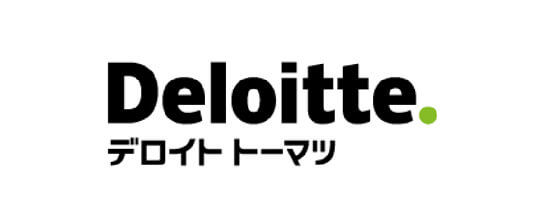
デロイト トーマツ コンサルティング合同会社
シルバー協賛
-
disguise Japan合同会社
-
Smode Japan株式会社
-
メタバースプロダクション
contact/FAQ お問い合わせ/FAQ
セミナー申込について
セミナーを視聴するにはどうしたらよいですか？
事前申込をしたセミナーを確認したいのですが？
セミナーの代理視聴はできますか？
当日に急遽参加できなくなったので申し込んだセミナーをキャンセルしたいのですがキャンセルできません。
セミナー受講に関するご注意
セミナー【Live配信】ご受講に際し、以下の事項に同意のうえお申込ください。
- 視聴にあたっては、セミナー一覧の該当のセミナーページから実際の視聴ページへご参加ください。
視聴ページはセミナーに参加する方のみ利用可能とし、再配布を禁止します。 - 受講者は、動画を録画・キャプチャーすることは一切できません。
もし、発見した場合、事務局は削除を要求できることとします。また、SNSなどへのアップも禁止します。 - セミナーの内容や受講者の個人情報などはセミナー内のみとし、口外しないでください。
- DL用講演資料は、講師が公表可能であると判断したものです。
講演のプレゼンテーション、デモンストレーションの中で、
提供物として公表できないものなどは含まれていない場合やDL用資料自体が無い場合があります。 - 各講演のDL資料、プレゼンテーションの内容の著作権は、特に断りのある場合を除き、プレゼンテーションの執筆者、講演者にあり、その内容は執筆者が責任を負います。
- DL用講演資料を社内用、社外用を問わず執筆者の承諾なしには使用出来ません。
無断使用は損害賠償、著作権法の処罰の対象になります。 - システムトラブルなどにより、画像・音声に乱れが生じた場合も対応出来かねますのでご自身でご調整ください。
- 配信中、異常と思われる接続を発見した場合、予告なく切断することがあります。
当日の受講について
本セミナー動画は「ULIZA」を利用してご視聴いただきます。
ULIZAの視聴環境
スマートフォン、タブレット、パソコンの主要なブラウザーに対応します。
対応再生環境は随時アップデートされます。
テレビでの視聴の場合、対応デバイスへの画面のミラーリングや画面のキャストが可能です。
オプションで、Apple TVとChromecastへの動画のストリーミングやキャストにも対応可能です。
視聴時の注意事項
- 視聴されている環境（パソコン、タブレット、スマートフォン）やブラウザによっては、 ページ更新やプレイヤーの再生ボタンを押さないと配信が開始されない場合がございます。
- 配信時間になっても配信が開始されない場合は、ページのプレイヤーの再生ボタンを押してください。それでも配信が始まらない場合はページを更新した上で、プレイヤーの再生ボタンを押してください。
- シークレットモードやキャッシュが残らない設定のお客様は視聴に不具合が生じる可能性がございます。シークレットモードでのご視聴はお控えいただき、キャッシュが残らない設定のお客様は再設定をお願いします。
- ご視聴が安定しない場合は、プレイヤーの画質設定を下げると安定する場合がございます。
- 退室の際は、「閉じる」ボタンからページを閉じてください。
※ブラウザの「 × 」ボタンからは閉じないでください
プログラムについて
講演内容は予告なく変更になる場合がございます。予めご了承ください。
セミナー配信・視聴の不具合については下記へお問い合せください。
日経BP お問い合わせフォーム